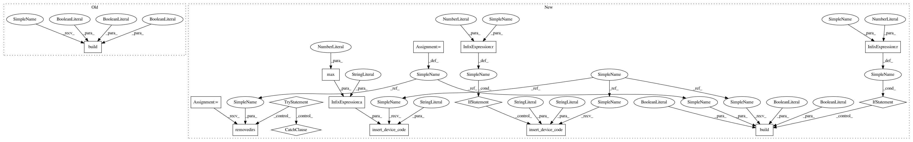

0e570423a0ecde90bff329a70efa3b666b6b316e,dev/benchmarks/openmp/STDP_standalone.py,,,#,12
Before Change
net.run(5 * second, report="text")
if standalone == 1:
device.build(project_dir="data_stdp_%d" %n_threads, compile_project=True, run_project=True, debug=False)
After Change
standalone = int(sys.argv[-2])
n_threads = int(sys.argv[-1])
path = "data_stdp_%d" %n_threads
if standalone == 1:
set_device("cpp_standalone")
brian_prefs.codegen.cpp_standalone.openmp_threads = n_threads
start = time.time()
N = 1000
taum = 10 * ms
taupre = 20 * ms
taupost = taupre
Ee = 0 * mV
vt = -54 * mV
vr = -60 * mV
El = -74 * mV
taue = 5 * ms
F = 30 * Hz
gmax = .01
dApre = .01
dApost = -dApre * taupre / taupost * 1.05
dApost *= gmax
dApre *= gmax
eqs_neurons = """
dv/dt=(ge*(Ee-vr)+El-v)/taum : volt // the synaptic current is linearized
dge/dt=-ge/taue : 1
"""
input = PoissonGroup(N, rates=F)
neurons = NeuronGroup(500, eqs_neurons, threshold="v>vt", reset="v=vr")
S = Synapses(input, neurons,
"""w:1
dApre/dt=-Apre/taupre : 1 (event-driven)
dApost/dt=-Apost/taupost : 1 (event-driven)""",
pre="""ge+=w
Apre+=dApre
w=clip(w+Apost,0,gmax)""",
post="""Apost+=dApost
w=clip(w+Apre,0,gmax)""",
connect=True,
)
S.w = "rand()*gmax"
state_mon = StateMonitor(S, "w", record=[0])
spike_mon_1 = SpikeMonitor(input)
spike_mon_2 = SpikeMonitor(neurons)
start_time = time.time()
net = Network(input, neurons, S, state_mon, spike_mon_1, spike_mon_2, name="stdp_net")
if standalone == 1:
device.insert_device_code("main", "std::clock_t start = std::clock();")
net.run(5 * second, report="text")
if standalone == 1:
device.insert_device_code("main", """
std::ofstream myfile ("speed.txt");
if (myfile.is_open())
{
double value = (double) (std::clock() - start)/(%d * CLOCKS_PER_SEC);
myfile << value << std::endl;
myfile.close();
}
""" %(max(1, n_threads)))
try:
os.removedirs(path)
except Exception:
pass
if standalone == 1:
device.build(project_dir=path, compile_project=True, run_project=True, debug=False)
In pattern: SUPERPATTERN
Frequency: 3
Non-data size: 15
Instances
Project Name: brian-team/brian2
Commit Name: 0e570423a0ecde90bff329a70efa3b666b6b316e
Time: 2014-08-26
Author: pierre@yger.net
File Name: dev/benchmarks/openmp/STDP_standalone.py
Class Name:
Method Name:
Project Name: brian-team/brian2
Commit Name: 0e570423a0ecde90bff329a70efa3b666b6b316e
Time: 2014-08-26
Author: pierre@yger.net
File Name: dev/benchmarks/openmp/STDP_standalone.py
Class Name:
Method Name:
Project Name: brian-team/brian2
Commit Name: 0e570423a0ecde90bff329a70efa3b666b6b316e
Time: 2014-08-26
Author: pierre@yger.net
File Name: dev/benchmarks/openmp/example_standalone_bis.py
Class Name:
Method Name:
Project Name: brian-team/brian2
Commit Name: 0e570423a0ecde90bff329a70efa3b666b6b316e
Time: 2014-08-26
Author: pierre@yger.net
File Name: dev/benchmarks/openmp/CUBA_standalone.py
Class Name:
Method Name: